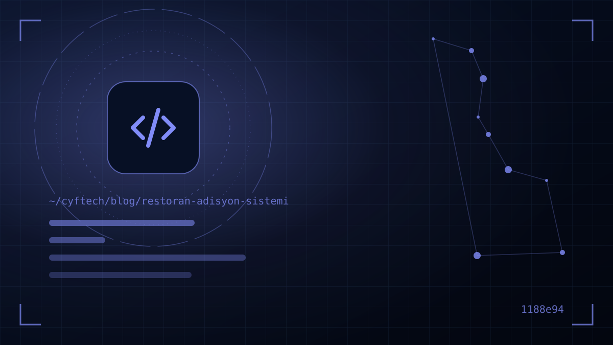

Вечер пятницы, зал полон. Официант записывает заказ на бумажку и бежит на кухню, кухня гадает над неразборчивым чеком, на кассе не сходится счёт. Деньги в ресторане чаще всего теряются не на дорогих продуктах, а в зазорах между заказом и кассой.
POS-система для ресторана — это комплекс программ и оборудования, фиксирующий каждый шаг с момента приёма заказа за столом до закрытия счёта: экран официанта или терминал, кухонный экран или принтер, касса и подключение к ККТ, меню, склад и отчёты. При правильной настройке обслуживание ускоряется, ошибок в заказах становится меньше, а владелец в конце дня видит в цифрах, что и сколько продано.
На рынке множество программ учёта заказов, и все приходят с похожими обещаниями. В этой статье мы рассказываем не о конкретном бренде, а о критериях выбора: базовые модули, кухонный экран, совместимость с ККТ и электронными документами, актуальные правила по меню и ценам в Турции, управление складом и техкартами, работа сети, оборудование и стоимость. В конце вы найдёте чек-лист для сравнения.
Модули, которые должны быть в POS-системе ресторана
Каким бы ни был размер и концепция вашего заведения, в хорошей программе учёта заказов должны быть следующие основные части:
- Управление столами и заказами: план зала, объединение и перенос столов, число гостей, комментарии к заказу («без лука», «слабой прожарки») и варианты блюд.
- Экран официанта: приём заказа с планшета, телефона или терминала; заказ мгновенно попадает на кухню и в кассу.
- Кухонный и барный экран: разделение заказов по станциям приготовления, очередь и возврат официанту статуса «готово».
- Касса и оплата: разделение счёта, частичная оплата, права на скидки и угощения, разные способы оплаты — наличные, карта, карты питания.
- Управление меню: товары, категории, цены и меню по времени (завтрак, обед, happy hour) управляются из одного места.
- Отчёты: закрытие дня, продажи по позициям, эффективность персонала, отчёты об отменах и угощениях.
Доставка и интеграции
Если вы работаете на доставку, в этот список добавляются телефонные заказы, база адресов клиентов и отслеживание курьеров. Ручной повторный ввод заказов с онлайн-платформ доставки еды с отдельного планшета — одна из самых частых причин ошибок и задержек в часы пик; если такие заказы сразу попадают в систему и на кухонный экран, разница огромна. Аналогично, если вы принимаете оплату картами питания, отображение этих платежей отдельным способом оплаты в кассовых отчётах упрощает сверку в конце дня.
При выборе составьте список платформ и бухгалтерской программы, которыми вы пользуетесь сегодня, и для каждой отдельно спросите: «Интеграция готова, за дополнительную плату или требует доработки?»
Кухонный экран (KDS) и синхронизация в реальном времени
Переход с бумажных чеков на кухонный экран — одно из улучшений, эффект которых заметен быстрее всего. Кухонный экран (Kitchen Display System, KDS) распределяет заказы по станциям, показывает время ожидания и позволяет всем видеть, заказ какого стола задерживается.
При оценке ищите ответы на следующие вопросы:
- Работает ли он в реальном времени? Заказ, изменение или отмена, введённые официантом, должны отражаться на экранах кухни и кассы за секунды. Синхронизация с задержкой — главный источник споров «это же отменили».
- Есть ли разделение по станциям? Горячий цех, холодный цех, бар и кондитерская станция должны видеть только свои позиции.
- Измеряется ли время приготовления? Отчёт о среднем времени приготовления по позициям выявляет узкие места в часы пик.
- Что будет, если пропадёт интернет? Обязательно спросите, продолжит ли система работать в локальной сети и как синхронизируются данные после восстановления связи.
Кухонный экран убирает не только бумагу, но и споры между кухней и залом.
Интеграция с ККТ (ÖKC), e-Fatura и e-Adisyon
При выборе POS-системы в Турции соответствие фискальному законодательству важнее списка функций. Нужно проверить три пункта:
Интеграция с ККТ нового поколения (ÖKC)
Использование ККТ нового поколения в розничных продажах регулируется Налоговым управлением Турции (GİB); законодательство делит эти устройства на подключаемые к компьютеру и с функцией EFT-POS. Проверьте, работает ли программа учёта заказов в интеграции с маркой и моделью ККТ, которой вы пользуетесь или будете пользоваться, — то есть превращается ли счёт в чек без повторного ручного ввода на кассе. Двойной ввод — это и потеря времени, и повышенный риск неучтённых продаж.
e-Fatura и e-Arşiv (электронные счета)
Если вы выставляете счета корпоративным клиентам или обязаны использовать e-Fatura, интеграция системы с вашим провайдером e-Fatura и e-Arşiv ускоряет закрытие счетов.
e-Adisyon
e-Adisyon — это система электронных документов, предусматривающая оформление счёта-заказа в электронном виде в заведениях общепита с обслуживанием за столом. GİB может обязать определённых налогоплательщиков перейти на e-Adisyon, предоставив им не менее трёх месяцев; для остальных заведений она добровольна. Поэтому стоит спросить, поддерживает ли выбранная система переход на e-Adisyon или есть ли он в планах развития.
Меню, прейскурант и запрет на плату за куверт: правила 2026 года
Изменения, внесённые в последние годы Министерством торговли в Положение о ценниках, напрямую влияют на настройки меню и цен в вашей POS-системе:
- Прейскурант у входа и на столах: с начала 2024 года рестораны и кафе обязаны размещать прейскуранты у входа и на столах. После изменения 2025 года можно предлагать и цифровое меню по QR-коду, но это не отменяет обязанность иметь печатный прейскурант.
- Запрет платы за обслуживание, стол и куверт: с изменением, вступившим в силу 30 января 2026 года, с потребителя нельзя взимать обязательную плату за обслуживание, стол или куверт; нельзя брать деньги за принесённое без заказа. Чаевые могут быть только добровольными.
Ваша POS-система должна соответствовать этим правилам: настройки, автоматически добавляющие сервисный сбор, должны отключаться, а при централизованном изменении цен они должны одновременно отражаться в цифровом меню, на экране официанта и в печатном прейскуранте. Обновить цену на одном экране и забыть на другом — путь к жалобам потребителей и административным санкциям.
Учёт склада, техкарт и себестоимости
Прибыльность ресторана зависит не столько от продаж, сколько от себестоимости. Если POS-система фиксирует продажи, следующий шаг — знать, что каждая продажа списывает со склада:
- Технологические карты: техкарта с граммовкой для каждого блюда меню; при продаже ингредиенты автоматически списываются со склада.
- Себестоимость порции: при изменении цены продуктов себестоимость блюда и маржа обновляются автоматически. В период инфляции это самый надёжный способ правильно устанавливать цены.
- Потери и инвентаризация: сравнение записей о потерях и результатов периодических инвентаризаций с теоретическим остатком; хищения и перерасход становятся видимыми.
- Предупреждение о критическом остатке: список недостающих продуктов перед напряжёнными выходными.
Не каждому заведению с первого дня нужен полный складской модуль; но если выбранная система может предложить эти модули по мере роста, вы избавитесь от хлопот по смене программы в будущем.
Централизованное управление для ресторанных сетей
Когда вы открываете второй филиал, ваши ожидания от ПО меняются. Схема, при которой каждый филиал работает в отдельной программе, а отчёты собираются по электронной почте, быстро становится неуправляемой. Что искать сетевым заведениям:
- Централизованные меню и цены: меню управляется из центра, при необходимости можно задать цены и позиции для конкретного филиала.
- Сравнительные отчёты по филиалам: выручка, структура продаж, средний чек и доля отмен по филиалам рядом друг с другом.
- Управление персоналом и правами: кто из сотрудников в каком филиале и с какими правами (скидка, угощение, отмена) работает — всё управляется из одной панели.
- Контроль касс и финансов: кассы филиалов, закрытия дня и финансовые отчёты отслеживаются из центра.
- Облачный доступ: владелец видит продажи в реальном времени с телефона, не выезжая в филиал.
Оборудование, внедрение и цены на POS-системы
Стоимость POS-системы складывается не только из лицензии на ПО. Сравнивая предложения, смотрите на следующие статьи по отдельности:
| Статья | На что обратить внимание? |
|---|---|
| Разработка ПО | Ежемесячная/годовая подписка или бессрочная лицензия? Оплата за филиал, устройство или пользователя? |
| Оборудование | Кассовый компьютер, планшет или терминал официанта, кухонный экран, принтеры чеков и кухонные принтеры. Можно ли использовать имеющиеся устройства? |
| ККТ и оплата | Есть ли доплата за интеграцию с ККТ нового поколения и банковским POS-терминалом? |
| Интеграции | Входят ли интеграции с провайдером e-Fatura, онлайн-платформами заказов, картами питания и бухгалтерией? |
| Внедрение и обучение | Кто вносит меню, настраивает план зала и обучает персонал? |
| Поддержка | Можно ли получить поддержку вечером и в выходные, то есть в самые загруженные часы? |
Самые критичные часы для ресторанов приходятся на нерабочее время компаний-разработчиков. Если вечером в пятницу система встала, а трубку никто не берёт, дешёвое ПО обходится очень дорого. Требуйте указать в предложении часы поддержки и время реагирования письменно.
Пример: как мы спроектировали RestaurantBill
Часть описанных критериев мы прочувствовали на себе, разрабатывая собственный продукт. RestaurantBill, созданный в CYF Tech, — это система учёта заказов и кухонного экрана для ресторанных сетей. Экраны официанта, кухни и кассы обмениваются заказами в реальном времени; филиалы, персонал, меню, кассы и финансовые отчёты управляются из одной панели.
Главное, чему мы научились в процессе: ресторанное ПО нужно тестировать не в офисе, а в зале — ценность функции измеряется тем, за сколько секунд официант может ею воспользоваться в разгар смены. Продукт можно посмотреть на странице наши проекты. Какую бы систему вы ни выбрали, рекомендуем использовать чек-лист ниже при сравнении предложений. Если вы также думаете об обновлении сайта ресторана, загляните в наши веб-решения.
- Синхронизированы ли экраны официанта, кухни и кассы в реальном времени?
- Продолжает ли система работать при отключении интернета?
- Есть ли интеграция с вашей ККТ и провайдером e-Fatura?
- Отражаются ли изменения меню и цен на всех экранах одновременно?
- Можно ли отключить настройки, автоматически добавляющие плату за обслуживание или куверт?
- Можно ли при необходимости добавить модули склада, техкарт и сети филиалов?
- Закреплены ли письменно часы поддержки вечером и в выходные?
Частые вопросы
Чем программа учёта заказов отличается от POS-системы?
Программа учёта заказов управляет приёмом заказов, их передачей на кухню и счетами столов. POS — это сторона кассы и карточного терминала, где принимается оплата. Сегодня большинство ресторанных программ объединяют обе функции и работают в связке с ККТ нового поколения.
Обязателен ли e-Adisyon для каждого ресторана?
Нет. GİB может обязать определённых налогоплательщиков перейти на e-Adisyon, предоставив не менее трёх месяцев; для остальных заведений это добровольно. Проверьте ситуацию вашего заведения у бухгалтера и по объявлениям GİB.
Могут ли рестораны брать плату за куверт или обслуживание?
Нет. Изменением Положения о ценниках, вступившим в силу 30 января 2026 года, запрещено взимать обязательную плату за обслуживание, стол и куверт. Гость платит только за заказанные позиции; чаевые — по желанию.
Работает ли POS-система без интернета?
Зависит от системы. Одни решения продолжают работать в локальной сети и синхронизируют данные при появлении связи, другие полностью зависят от интернета. Перед выбором обязательно спросите о сценарии отключения.
Нужна ли POS-система небольшому кафе?
Даже в кафе на несколько столов простая система учёта заказов помогает сократить ошибки в счетах, видеть продажи по позициям и избавиться от двойного ввода в ККТ. По мере роста можно добавить кухонный экран и складские модули.
В заключение
Правильная POS-система ускоряет обслуживание, сокращает ошибки в заказах и счетах, делает затраты видимыми и упрощает соблюдение фискального законодательства. При выборе ориентируйтесь не на эффектные демо, а на синхронизацию в реальном времени, совместимость с ККТ и электронными документами, актуальные правила по меню, ваши перспективы роста и поддержку в часы пик.
Если хотите обсудить подходящую схему учёта заказов для вашего заведения, поближе познакомиться с RestaurantBill или оценить решение под ваши собственные процессы, свяжитесь с нами.